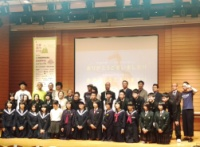

2017年の挑戦
情報コース1年生から3年生の有志が、連日プログラミング学習へ取り組み、難しい問題にも挑戦しました。
環境と成果
プログラミング大会、情報処理選手権、キャラクターやコピーの公募へ、授業で培った処理力と表現力を生かします。
情報コース1年生から3年生の有志が、連日プログラミング学習へ取り組み、難しい問題にも挑戦しました。
2018年は『カ・BOSSさん』、2019年は『USAくん』が高校生部門の優秀賞に選ばれました。
情報コース2・3年生が千葉工業大学主催の情報処理選手権へ参加しました。

